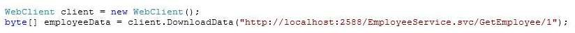
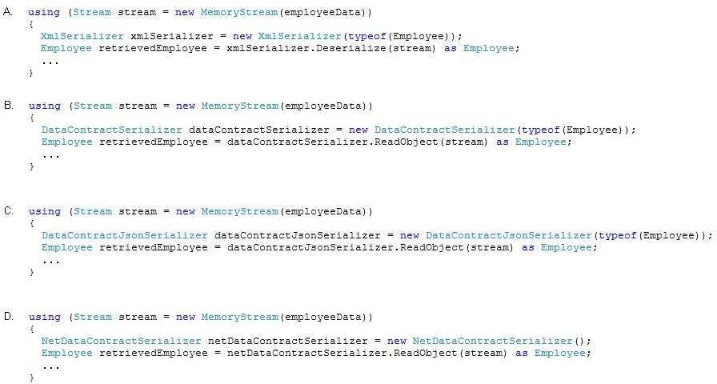

{"Id":1,"Name":"David Jones"}
The following code segment invokes the service and stores the result:

You need to convert the returned JSON data to an Employee object for use in the application.
Which code segment should you use?

A. Option A
B. Option B
C. Option C
D. Option D
Correct Answer: C
Section: Volume B
Explanation
Explanation/Reference:
Explicación
Para la solución del ejercicio es necesario tener un objeto JSON del tipo Employee, el cual primero es serializado a Byte y luego pasado como una cadena de bytes a la MemoryStream.
La representación visual del codigo muestra el primer paso que es:

Hard code el objeto JSON del tipo empleado, luego convertir esta cadena JSON a Byte tal y como se muestra en la siguiente imagen:

Luego en un try - catch envolvemos el código que es la respuesta correcta del ejercicio al ejecutar exitosamente el proyecto. El código que ejecuta de manera exitosa la opción se muestra a continuación en una imagen:
Respuesta:
Mostrando de manera visual la respuesta: